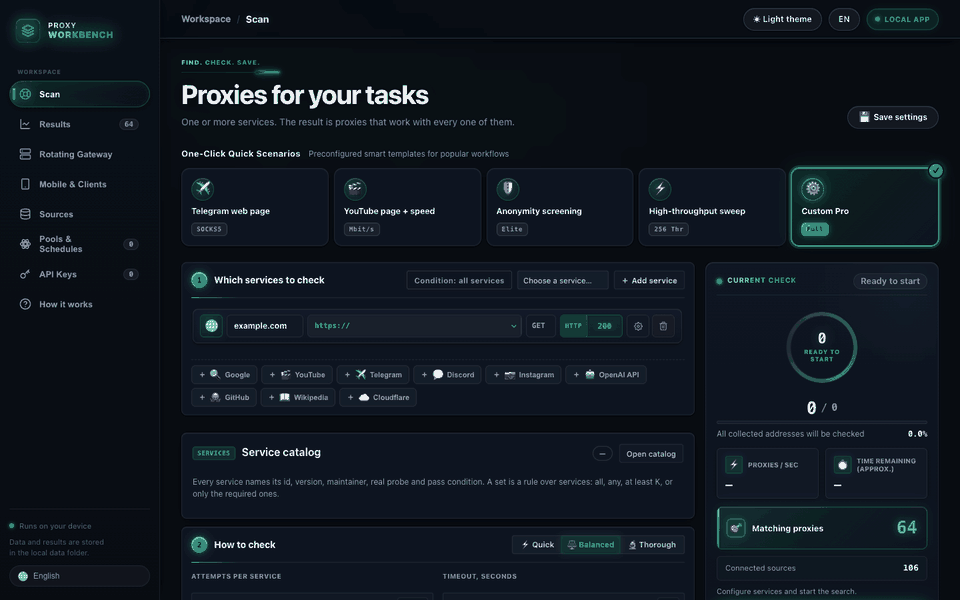
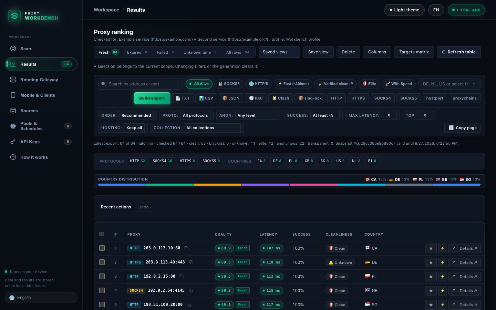
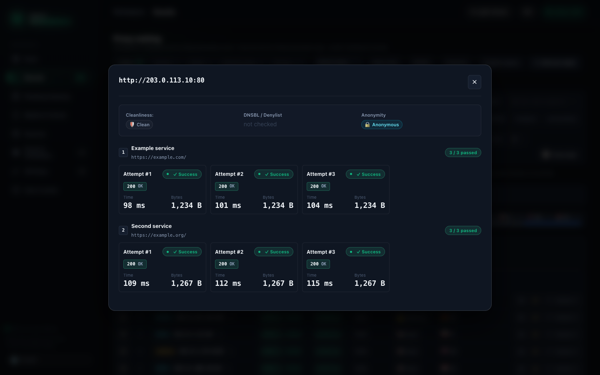
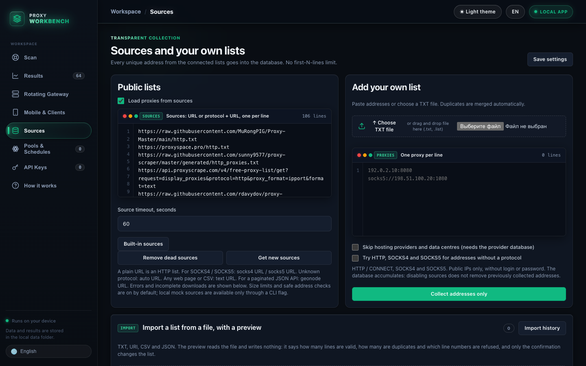
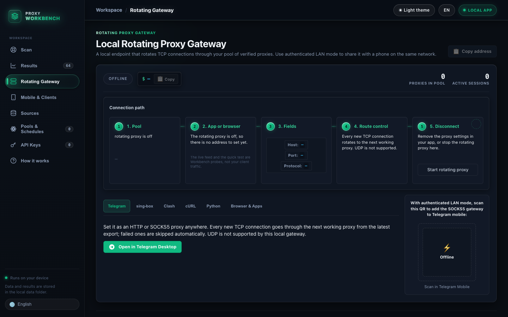
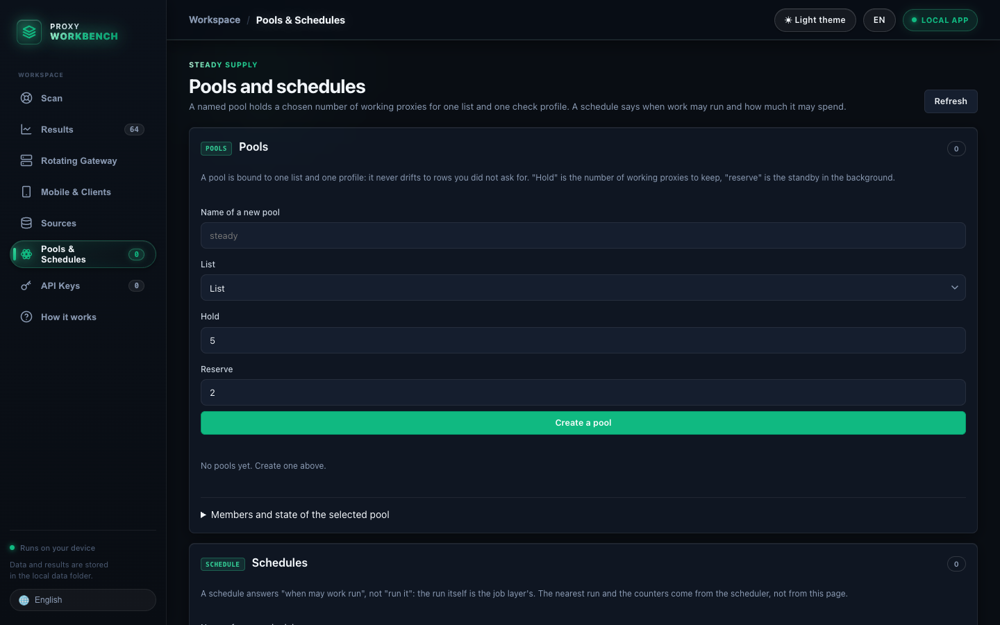
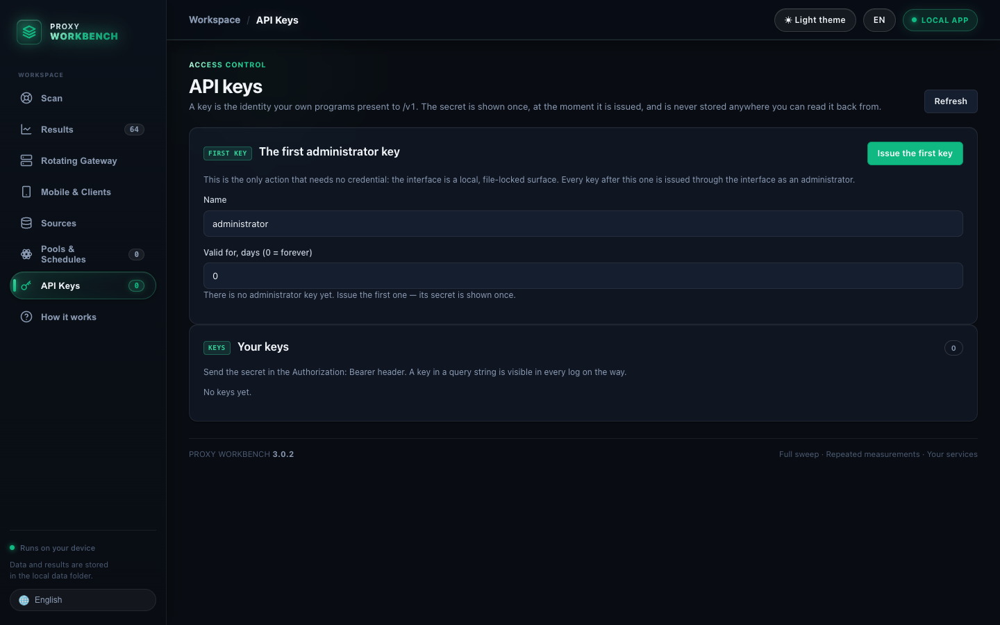

Choose the sources and targets
Use the supported source feeds or import your own lists. Add service URLs and set allowed responses, required text, or a response hash.
Open source · Runs on your machine
Collect from supported public sources or bring your own list. Check each proxy against the services you choose, understand the result, then export or connect through a rotating gateway and local API.

A clear path to usable results
You decide what a successful request means. Results keep the evidence behind each decision.
Use the supported source feeds or import your own lists. Add service URLs and set allowed responses, required text, or a response hash.
Make repeated requests through candidates, with a threshold for each target. Optional judge and denylist checks add anonymity and IP verdicts.
See individual attempts, filter and rank the working set, then build files, client configs, a gateway pool, or a fresh local API snapshot.
The workspace
Eight tabs connect discovery, verification, delivery, and maintenance in the current desktop interface.
Set service rules and check presets; start, stop, resume, or recheck while watching live progress.
Separate fresh, expired, failed, and unknown results. Search, filter, inspect attempts, and build exports.
Use one local HTTP or SOCKS5 endpoint for your verified proxies, with connection stats and client setup.
Copy or download sing-box and Clash configs, or connect Telegram through the gateway.
Browse 150 catalog entries. Fresh installs select 106 supported feeds; you can add your own lists and manage their scope.
Keep a chosen number of working proxies for a profile and schedule checks with time and budget limits.
Create scoped keys for the control API, with permissions, limits, rotation, and an audit trail.
Follow the built-in guide, review diagnostics, and manage settings, backups, and local data.
Inside the interface
Current screens show ranking, source selection, gateway setup, pools, keys, and the evidence behind each check. All examples use synthetic documentation data.






The pictured addresses come from reserved documentation ranges (RFC 5737); they are examples, not usable public proxies. Availability of real public proxies and feeds changes over time.
One checked set, several ways to use it
Use an export when you need a file, the gateway when an app needs one proxy address, or the API when your code needs current results.
127.0.0.1:8899 while it is running./random, /proxies, /status, /pac, and /clash.Get started
Desktop builds open the local browser interface. The Python package works across platforms; Docker runs the checker and services without the browser GUI.
Download the DMG for Apple Silicon or Intel and move the app into Applications.
Get the macOS build ↗Choose the installer or portable ZIP. A separate CLI executable is also available.
Get the Windows build ↗Install with pipx or run from a source checkout; the command opens the local interface.
Use the bundled Compose setup for the checker, API, and rotating gateway.
Read Docker steps ↗Desktop installers are currently unsigned; macOS or Windows may ask you to confirm the first launch. Published release checksums let you verify a download.
For scripts and services
The read-only API serves the most recent export on your computer. The separate /v1 control API uses scoped keys for jobs, results, and administration.
While the GUI is open, the read-only endpoint listens on 127.0.0.1:8765. Filter by protocol, country, latency, or anonymity. A network-facing deployment requires a token.
curl "http://127.0.0.1:8765/random?protocol=socks5&country=DE&format=txt"Control and clarity
Set target URLs, response rules, attempts, and success thresholds. A reachable proxy is not automatically a match for your service.
View per-attempt outcomes, latency, quality, and optional anonymity or DNSBL verdicts before you export.
The GUI runs on loopback, with no account or telemetry. Public proxies can still see your traffic, so avoid sending secrets through them.